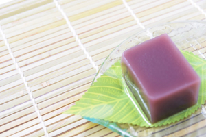
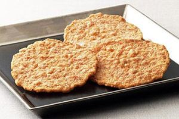

旅先でのお土産探しも、せっかくならウキウキする物を見つけたいですよね。深い歴史と伝統が兼ね備わる愛知では、
魅力いっぱいのお土産で溢れています。せっかくなら選びたい愛知県の人気おすすめお土産を、お菓子に特化した
ランキングにまとめました。ぜひ愛知旅行の参考にしてください。
愛知県の人気お土産ランキング1位～10位
第1位 鬼まんじゅう

見た目のごつごつしたイメージから名前の付いた鬼まんじゅうは、
昔から愛知のお菓子として根付いており、
サツマイモの甘さと生地のモチモチとした食感が特徴です。
第2位 青柳ういろう ひとくち
「ここのういろうが一番美味しい！」と昭和6年の発売以来、
人々に愛されている「青柳総本店」の「青柳ういろう」。
まさに一口タイプとして包装されている「青柳ういろう ひとくち」は、
さくら、抹茶、しろ、上りの四種類が手軽に楽しめます。

第3位 なごやん

全国的に知られている愛知の製パン会社Pasco(シキシマ)が売り出している
伝統的な銘菓が「なごやん」です。
カステラ風の生地に黄味あんが包まれており、その誰からも愛される素朴な味は
発売当初から変わりません。
第4位 えびせんべい
続けてもう一つご紹介するのは、まさに専門店「えびせんべいの里」。
えびせんべい専門というだけあって、豊富な種類と自慢の味が魅力的です。
知多郡の工場では見学も可能で、お土産探しだけではなく観光としても
楽しむことができます。

第5位 ゆかり

「えびせんべい」のお土産の中で特に定評のあるものが「坂角総本家」の「ゆかり」です。
一枚あたり7匹の海老が使われ、江戸時代から伝わる製法で風味豊かな海老そのものの味が楽しめます。
袋入り(8枚 691円)や缶入り(10枚 918円)も販売されており、
お土産用や自宅用など用途によって選べるのも嬉しい一品です。
愛知県の人気お土産ランキング6位～15位
- 第6位 納屋橋まんじゅう
- 第7位 小倉サンド
- 第8位 きよめ餅
- 第9位 古戦場最中
- 第10位 ゆたかおこし
- 第11位 名古屋せんべい
- 第12位 名古屋プリン
- 第13位 「料亭つたも」のわらび餅
- 第14位 あわ雪
- 第15位 味噌アイスクリーム